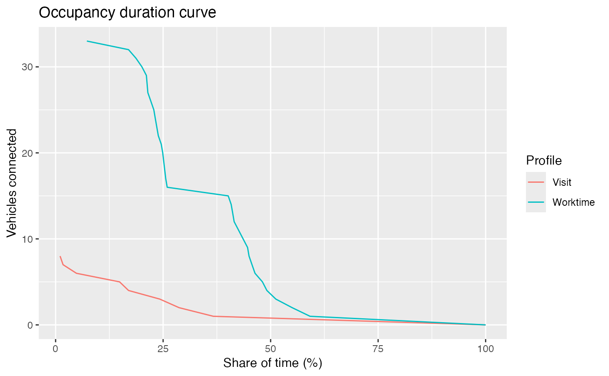

Plot the occupancy duration curve
Source:R/charging_infrastructure.R
plot_occupancy_duration_curve.RdThis term is based on the "load duration curve" and is useful to see the behavior of occupancy over the time in your charging installation. The steeper the curve, the shorter the duration that higher number of connections are sustained. Conversely, the flatter the curve, the longer the duration that higher number of connections are sustained. This information is crucial for various purposes, such as infrastructure planning, capacity sizing, and resource allocation.
Usage
plot_occupancy_duration_curve(
sessions,
dttm_seq = NULL,
by = "Profile",
resolution = 15,
align_time = FALSE,
mc.cores = 1
)Arguments
- sessions
tibble, sessions data set in standard format marked by
{evprof}package (see this article)- dttm_seq
sequence of datetime values that will be the
datetimevariable of the returned time-series data frame.- by
character, being 'Profile' or 'Session'. When
by='Profile'each column corresponds to an EV user profile.- resolution
integer, time resolution (in minutes) of the sessions datetime variables. If
dttm_seqis defined this parameter is ignored.- align_time
logical, whether to align time variables or sessions with the corresponding time
resolution- mc.cores
integer, number of cores to use. Must be at least one, and parallelization requires at least two cores.
Examples
library(dplyr)
sessions <- head(evsim::california_ev_sessions_profiles, 100)
plot_occupancy_duration_curve(
sessions,
by = "Profile",
resolution = 15,
align_time = TRUE
)
